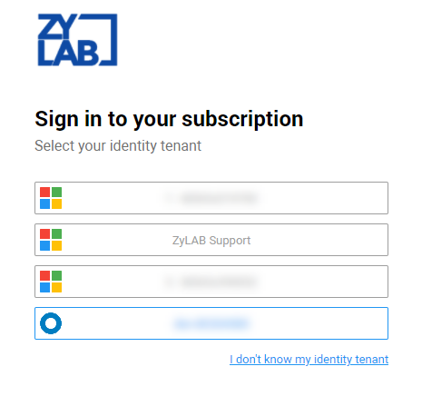

Tip: Bookmark the link to your ZyLAB ONE Hold subscription, https://mysubscription.legalhold.domain
Simplify managing your legal holds.
A legal hold is a formal notice or directive with the goal to identify and preserve relevant data. Please note that identification and preservation is not equal to collection. Identification and preservation protects data from being lost or altered. For example, preservation might include taking backup tapes out of rotation, disabling an auto-delete function and/or interviewing custodians (with questionnaires) to determine the scope of the hold.
The mapping of custodians and case related data is also part of a legal hold. It is a legal obligation as this data could serve as evidence or as a key-factor in litigation. Data should be retained until litigation is no longer pending nor reasonably anticipated.
|
|
Tip: Bookmark the link to your ZyLAB ONE Hold subscription, https://mysubscription.legalhold.domain |
Users that have been assigned a
For information on authentication for Okta users, see Integrate with Okta.
|
|
Note: Only users can log in to the |
Navigate to your
Select your identity tenant (Public Tenant Name).
Multiple tenants might be available. When there is only one, this step is skipped.

Microsoft Azure tenants can be recognized with this icon
Enter your email and click Next. Now you're logged in to
Navigate to your
Select your identity tenant (Public Tenant Name).
Multiple tenants might be available. When there is only one, this step is skipped.

Okta tentants can be recognized with this icon

Sign in to Okta with your username and password. Now you're logged in to
Logged in users with the Global Hold Manager role, can create and issue a hold. In short, this means that a hold is created, contacts are added as custodians and messages are defined (with the Legal Hold Notice being the first important message). It is possible to add one or more questionnaires. As soon as the hold is issued, custodians will receive the Hold Notice. They are required to fill out the attached questionnaires before accepting the hold.
For more information on how to get started, please view the Quick Start Videos.
Start creating a hold (1) through the hold creation interface (2), where you will identify custodians (3) and create a hold directive in messaging (4). When needed, questionnaires can be added to the directive (5), or you can send out the hold directive immediately (6). Hold reminders can be send out periodically (7) and an auditable list of actions performed for this hold can be retrieved (8).